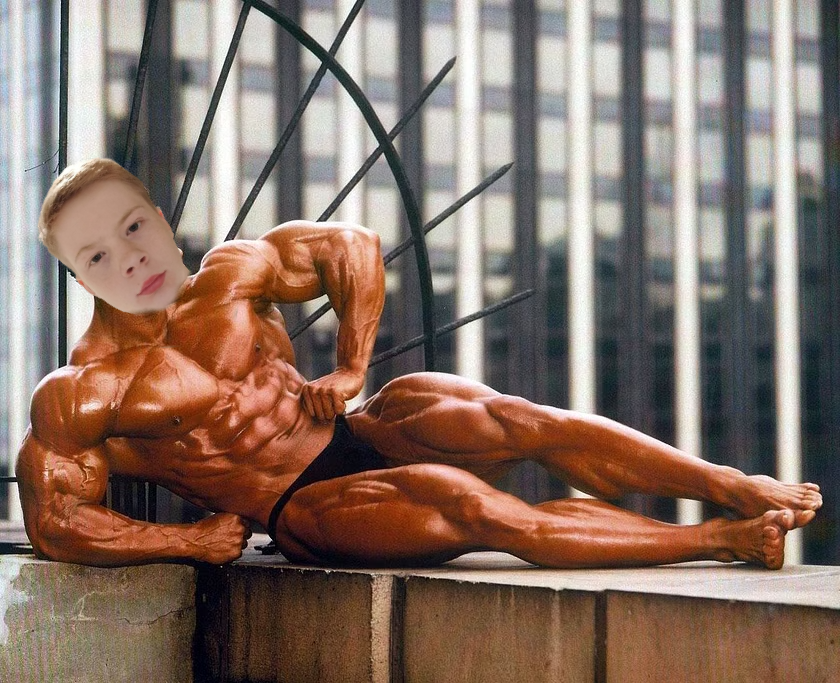
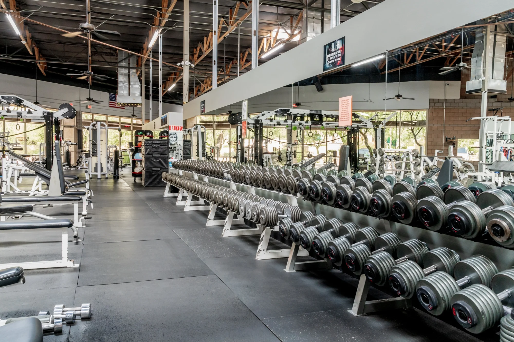

History
.png)
- Bronze Era (1894-1939)
- De bronze era is waar bodybuilding begon. Deze tijd staat er om bekend omdat er nog geen steroïden waren uitgevonden. Wat vaak voor kwam is dat de mannen heel klein in lengte waren. Doordat ze zo klein waren leken ze meer gespierd.
- Silver Era (1940-1959)
- In de silver era begonnen de eerste bodybuilders met het injecteren van steroïds maar het was nog niet gebruikelijk. Tijdens deze jaren werd steeds meer onderzoek gebruikt. Mensen gingen beter eten waardoor ze veel groter werden dan vroeger.
- Golden Era (1960-1983)
- Deze tijd staat natuurlijk bekend vanwege Arnold Schwarzenegger. Bijna alle bodybuilders gebruikte nu steroïds. De bodybuilders werden heel groot maar niet heel erg droog.
- Mass Era (1984-Present)
- In het heden is het heel erg belangrijk om zo groot en zo droog mogelijk te worden. Bodybuilders staan bekend om hun zware dieet.
In 1799 richtte Franz Nachtegall uit Denemarken ’s werelds eerste privé gymnastiek club op. Vandaag de dag zouden we het een fitnessclub of zelfs een CrossFit Box noemen. Men denkt dat de privé club van Nachtegall grootschalige groepslessen aanbood die bestonden uit calisthenics, polsstok springen, houten dumbbels en zware medicijnballen.

